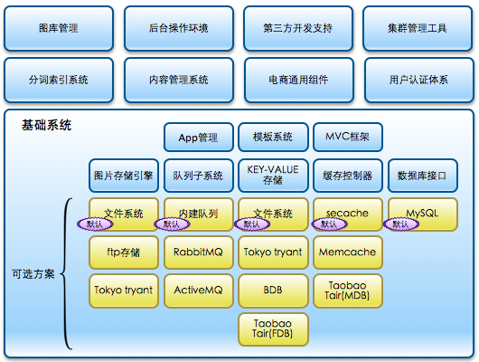

Ecos技术先进性-方案技术特点 for ECP

- 支持CDN优化，使网站无论是联通用户还是电信用户，获得一致的访问体验
- 对JS，CSS等资源采用引用方式，支持本地缓存加载，提升访问速度
- 对于站内搜索及购物向导采用搜索引擎技术进行优化
- 独有的多级缓存体系保证服务器负载能力
- 为大型企业量身定做的集群支持，系统负载能力强
- 无状态的Application服务层，使企业随意扩展服务器资源，应对营销活动的突发流量
- 平滑实现资源新增，无需中断业务进行升级
- 可支持云计算模式实现按需付费，降低运营成本
- 后端处理系统可以在公司内网布署，防范黑客风险
- 近百台服务器组成的采用云计算技术及PUSH ORDER技术的矩阵云服务提供路由及转换运算，处理能力达2000万订单/日
- 使高峰订单时后端处理系统的处理能力提升达数十倍
- 云端计算按统一数据标准输出，系统无需关心外部系统如淘宝、拍拍、物流及支付等接口的频繁变更
- URL路由功能支持网站URL按需定制
- 可自由定制网站标题、关键字及描述
- 经专业团队优化的网页代码方便搜索引擎读取
- 遵循公安部GA 611-2006 《互联网信息服务系统 安全保护技术措施》标准设计
- 高强度的多重变换Salt密码算法，即使数据库泄露，密码破解难度极大
- 对敏感信息进行加密保护
- 完备的安全日志以供审计
- 支持SSL加密传输
- 系统RPO等于0，即当主数据库服务器发生硬盘损坏等毁灭性灾难时，没有数据丢失
- 系统RTO小于等于10分钟，即主数据库服务器发生硬盘损坏等毁灭性灾难时，只需要5分钟时间进行切换，如需RTO为0，可采用cluster解决方案
- 除数据库服务器外，其它服务器的损坏不会引发系统不可用
- 基于Oracle Enterprise Linux优化
- innoDB存储引擎提供事务安全
- 支持InnoDB联机备份
- 支持时间点恢复
测试环境：4台Web server ,1台cache server,2台DB server
| Name |
highest 10sec mean |
lowest 10sec mean |
Highest Rate |
Mean |
Count |
| connect |
0.732 msec |
0.622 msec |
239.8 / sec |
0.684 msec |
114977 |
| page |
4.25 sec |
0.27 sec |
199.8 / sec |
0.90 sec |
82985 |
| request |
2.86 sec |
0.22 sec |
280.5 / sec |
0.65 sec |
114977 |
| session |
4.61 sec |
0.27 sec |
201.4 / sec |
0.90 sec |
82985 |
在600秒压力测试过程中,成功处理114977PV访问,总计生成订单5625.
集群每秒成功处理280.5页面请求,可承载1000万PV/日的压力.
经测试,集群能够承载促销活动时大并发量,高订单转化率业务场景所产生的压力.
同时，随着服务器的新增，负载能力能平滑升级
从request数据表中,我们可以看到页面请求平均最高响应时间为2.86秒,用户能够正常访问各页面
(摘自压力测试报告)